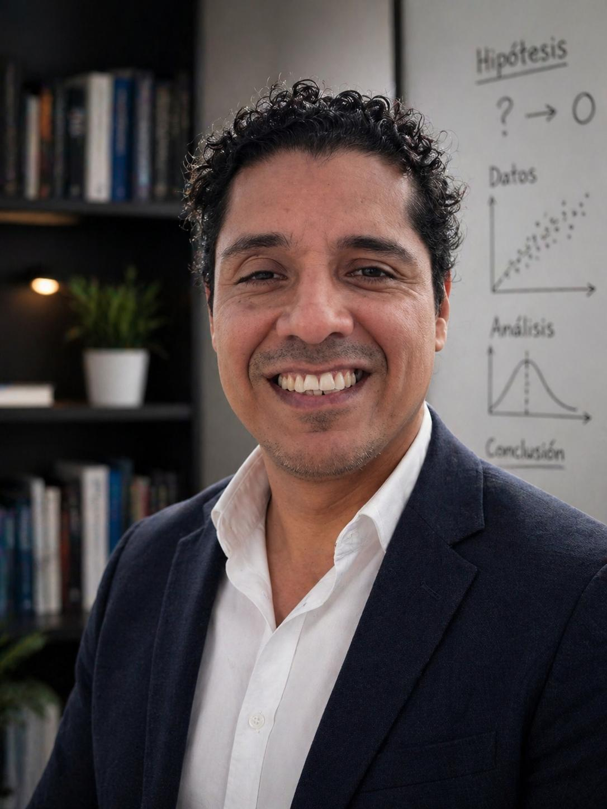

Eduardo Tapia, PhD
Institute for Analytical Sociology · Linköping University
Research profile
I am an Associate Professor at the Institute for Analytical Sociology (IAS), Linköping University, Sweden. My research focuses on migration, social integration and inequality — with particular attention to school and residential segregation processes.
My work is oriented toward the evaluation of public policies in education and urban planning. I combine sociological theory with advanced quantitative methods, large-scale administrative data, computational techniques, and agent-based simulation models. This approach enables me to identify unintended consequences of institutional rules and to evaluate policy-relevant alternative scenarios.
I have published in leading international journals including Demography, Population, Space and Place, Journal of Education Policy, Journal of Urban Affairs, and the British Journal of Sociology of Education. I have led competitive projects funded by the Swedish Research Council and participated centrally in international projects on segregation, integration, and territorial inequality.
Accreditations: AQU Catalunya – Profesor Agregado ANECA – Profesor/a Contratado/a Doctor/a ANECA – Profesor/a de Universidad Privada
Biography

Eduardo Tapia was born in Peru, where he studied Sociology at the Universidad Nacional Federico Villarreal in Lima. Drawn to the intersection of social theory and empirical research, he moved to Barcelona to pursue graduate studies at the Universitat Autònoma de Barcelona (UAB), where he completed both his Master's in Applied Sociology (2010) and his PhD in Sociology (2013). His doctoral dissertation — the first PhD thesis in Sociology in Spain to use agent-based simulation models — explored the dynamics of rumour diffusion in social networks.
After completing his doctorate, Eduardo moved to Sweden to work with Professor Peter Hedström at the Institute for Analytical Sociology (IAS), Linköping University, on new frontiers in the implementation of large-scale simulation models in the social sciences. He held a postdoctoral position from 2015 to 2018, was promoted to Senior Lecturer in 2019, and became Associate Professor in 2023, the position he currently holds.
His research focuses on the mechanisms behind ethnic school and residential segregation, combining large-scale administrative data with agent-based simulation models to evaluate the real-world consequences of public policies. He has led competitive projects funded by the Swedish Research Council and published in leading international journals including Demography, Journal of Education Policy, and the British Journal of Sociology of Education.
Research output
In-movers and Neighborhood Sorting: The Direct, Indirect, and Cumulative Effects of In-movers on Ethnic Residential Segregation
Kin Propinquity, Residential Mobility, and the Persistence of Segregation
Understanding School Segregation through Micro-changes
Can School Closures Decrease Ethnic School Segregation?
Schools' Priority Rules and Ethnic School Segregation
If You Move, I Move
Groups' Contribution to Shaping Ethnic Residential Segregation
Tax Compliance, Rational Choice, and Social Influence
Agent-Based Model of Tax Compliance: An Application to the Spanish Case
Exploring Tax Compliance: An Agent-Based Simulation
The Symbolic Context of School Choice: Neighborhood Reputation and Ethnic School Segregation
Reputational Shocks and Ethnic Residential Segregation: Evidence from Sweden's Vulnerable Areas
Funding & grants
Understanding the Dynamics of School Choice to Reduce Segregation in Education
Evaluation of institutional rules and educational policies using administrative data and simulation models, aimed at identifying effective desegregation strategies.
Neighborhood and School Segregation Across Educational Careers
The Role of Media in School and Neighborhood Reputation Formation
Principal authorship on empirical publications derived from the project, with central responsibility for empirical design and execution.
Dynamics of Public Opinion and Collective Action
Education
Agent-Based Modelling for the Social Sciences
Course director. Simulation models for the analysis of social dynamics and evaluation of public policies.
Master's Thesis Supervision
Director and supervisor. Training in computational social science research methods across all stages of the research process.
Also supervised 1 co-directed PhD thesis (defended) and more than 10 master's theses.
Academic citizenship
Research in the media
School closures inefficient in combatting segregation, simulation shows
May 2023Municipalities have sometimes closed schools dominated by immigrant-background students to counter segregation. New computer simulations show this method seldom gives the desired result — and in some scenarios even increases segregation.
Schools' intake segregates students
January 2023Intake rules for upper secondary schools — based on grades or geographical proximity — have a clear, measurable effect on ethnic segregation among students, even after controlling for housing segregation and school choice.
Get in touch
I am based at the Institute for Analytical Sociology, Linköping University, Sweden. Feel free to reach out about research collaborations, seminars, or academic enquiries.